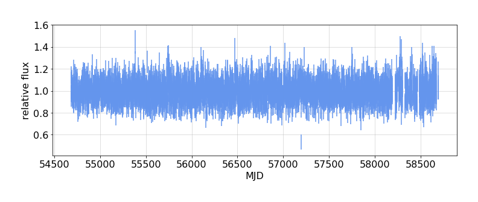
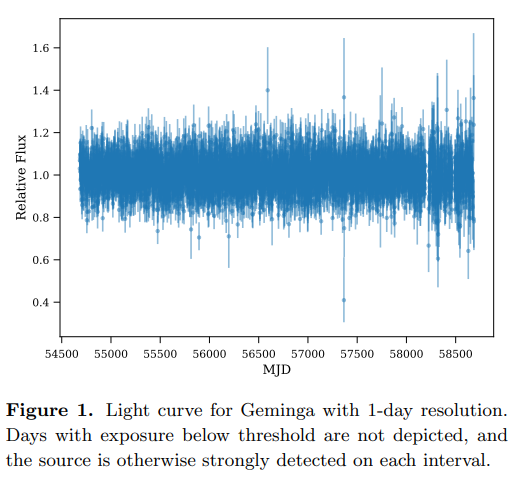
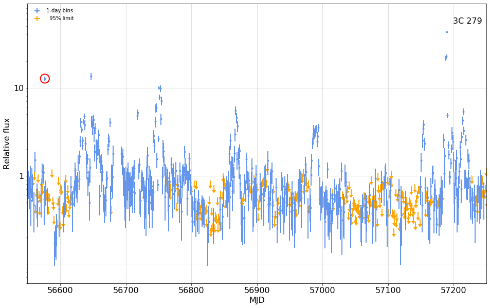
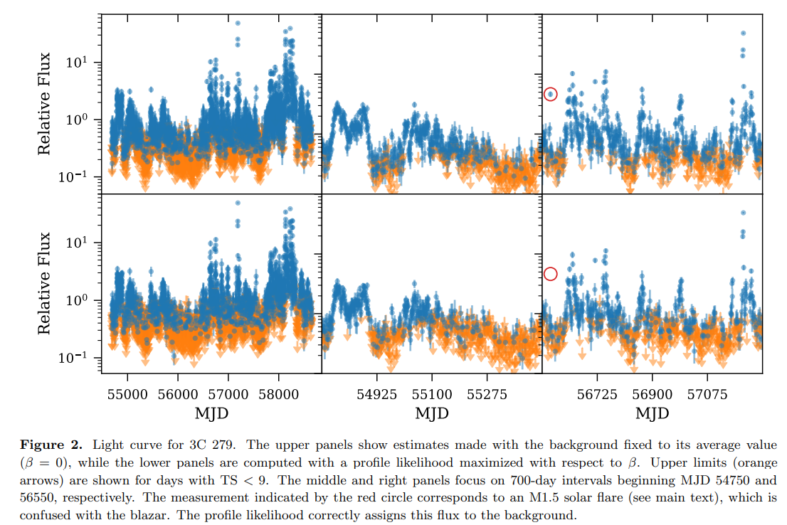

---

title: Kerr Comparison


keywords: fastai
sidebar: home_sidebar

summary: "A few plots to compare with M. Kerr's results"
description: "A few plots to compare with M. Kerr's results"
nb_path: "nbs/13_kerr_comparison.ipynb"
---
<!--

#################################################
### THIS FILE WAS AUTOGENERATED! DO NOT EDIT! ###
#################################################
# file to edit: nbs/13_kerr_comparison.ipynb
# command to build the docs after a change: nbdev_build_docs

-->

<div class="container" id="notebook-container">
        
    {% raw %}
    
<div class="cell border-box-sizing code_cell rendered">

</div>
    {% endraw %}

    {% raw %}
    
<div class="cell border-box-sizing code_cell rendered">
<div class="input">

<div class="inner_cell">
    <div class="input_area">
<div class=" highlight hl-ipython3"><pre><span></span><span class="kn">from</span> <span class="nn">light_curves.config</span> <span class="kn">import</span> <span class="o">*</span>
<span class="c1"># Config().cache.clear()</span>
</pre></div>

    </div>
</div>
</div>

</div>
    {% endraw %}

<div class="cell border-box-sizing text_cell rendered"><div class="inner_cell">
<div class="text_cell_render border-box-sizing rendered_html">
<p>This package implements a weighted likelihood analysis presented
in a <a href="https://arxiv.org/pdf/1910.00140.pdf">paper</a> by Matthew Kerr.</p>
<p>Here I generate plots for two of the sources that he examined,
and compare with figures from that paper.</p>

</div>
</div>
</div>
    {% raw %}
    
<div class="cell border-box-sizing code_cell rendered">
<details class="description">
      <summary data-open="Hide Code" data-close="Show Code"></summary>
        <summary></summary>
        <div class="input">

<div class="inner_cell">
    <div class="input_area">
<div class=" highlight hl-ipython3"><pre><span></span><span class="k">def</span> <span class="nf">kerr_test</span><span class="p">():</span>
    <span class="sd">&quot;&quot;&quot;</span>
<span class="sd">    </span>
<span class="sd">    #### A bright pulsar, {source1.name}:</span>
<span class="sd">    {print_out1}    </span>
<span class="sd">    {fig1}    </span>
<span class="sd">    This is to be compared with Kerr&#39;s Figure 1:    </span>
<span class="sd">    {kerr_fig1}</span>
<span class="sd">   </span>
<span class="sd">    #### A flaring AGN, {source2.name}</span>
<span class="sd">    {print_out2}</span>
<span class="sd">    {fig2}</span>
<span class="sd">    </span>
<span class="sd">    This corresponds to the upper central panel in Kerr&#39;s Figure 2.</span>
<span class="sd">    {kerr_fig2}</span>
<span class="sd">    &quot;&quot;&quot;</span>
    <span class="kn">from</span> <span class="nn">light_curves.config</span> <span class="kn">import</span> <span class="n">Config</span><span class="p">,</span> <span class="n">PointSource</span><span class="p">,</span> <span class="n">Cache</span>
    <span class="kn">from</span> <span class="nn">light_curves.lightcurve</span> <span class="kn">import</span> <span class="n">get_lightcurve</span><span class="p">,</span> <span class="n">flux_plot</span>

    <span class="n">config</span> <span class="o">=</span> <span class="n">Config</span><span class="p">()</span>    
    <span class="n">plt</span><span class="o">.</span><span class="n">rc</span><span class="p">(</span><span class="s1">&#39;font&#39;</span><span class="p">,</span> <span class="n">size</span><span class="o">=</span><span class="mi">16</span><span class="p">)</span>

    <span class="k">with</span> <span class="n">capture_print</span><span class="p">(</span><span class="s1">&#39;printout from this analysis&#39;</span><span class="p">)</span> <span class="k">as</span> <span class="n">print_out1</span><span class="p">:</span>
        <span class="n">source1</span> <span class="o">=</span> <span class="n">PointSource</span><span class="p">(</span><span class="s1">&#39;Geminga&#39;</span><span class="p">)</span>
        <span class="n">lc1</span> <span class="o">=</span> <span class="n">get_lightcurve</span><span class="p">(</span><span class="n">config</span><span class="p">,</span> <span class="n">source1</span><span class="p">)</span>
        <span class="n">fig1</span> <span class="o">=</span> <span class="n">figure</span><span class="p">(</span> 
                    <span class="n">flux_plot</span><span class="p">(</span><span class="n">config</span><span class="p">,</span> <span class="n">lc1</span><span class="p">,</span> <span class="n">fignum</span><span class="o">=</span><span class="mi">1</span><span class="p">,</span> <span class="n">colors</span><span class="o">=</span><span class="p">(</span><span class="s1">&#39;cornflowerblue&#39;</span><span class="p">,</span> <span class="s1">&#39;orange&#39;</span><span class="p">)),</span>
                    <span class="n">caption</span><span class="o">=</span><span class="sa">f</span><span class="s1">&#39;</span><span class="si">{</span><span class="n">source1</span><span class="o">.</span><span class="n">name</span><span class="si">}</span><span class="s1">&#39;</span><span class="p">,</span>
                    <span class="n">width</span><span class="o">=</span><span class="mi">500</span><span class="p">,</span> <span class="p">)</span>
    <span class="n">kerr_fig1</span> <span class="o">=</span> <span class="n">image</span><span class="p">(</span><span class="s1">&#39;kerr_fig1.png&#39;</span><span class="p">,</span> <span class="n">width</span><span class="o">=</span><span class="mi">300</span><span class="p">,</span> <span class="n">caption</span><span class="o">=</span><span class="s1">&#39;Kerr Figure 1&#39;</span><span class="p">)</span>
    
    <span class="k">with</span> <span class="n">capture_print</span><span class="p">(</span><span class="s1">&#39;printout from this analysis&#39;</span><span class="p">)</span> <span class="k">as</span> <span class="n">print_out2</span><span class="p">:</span>
        <span class="n">source2</span> <span class="o">=</span> <span class="n">PointSource</span><span class="p">(</span><span class="s1">&#39;3C 279&#39;</span><span class="p">)</span>
        <span class="n">lc2</span> <span class="o">=</span> <span class="n">get_lightcurve</span><span class="p">(</span><span class="n">config</span><span class="p">,</span> <span class="n">source2</span><span class="p">)</span>
        <span class="n">fig2</span> <span class="o">=</span> <span class="n">figure</span><span class="p">(</span>
                    <span class="n">flux_plot</span><span class="p">(</span><span class="n">config</span><span class="p">,</span> <span class="n">lc2</span><span class="p">,</span> <span class="n">fignum</span><span class="o">=</span><span class="mi">2</span><span class="p">,</span> <span class="n">figsize</span><span class="o">=</span><span class="p">(</span><span class="mi">10</span><span class="p">,</span><span class="mi">5</span><span class="p">),</span> <span class="n">yscale</span><span class="o">=</span><span class="s1">&#39;log&#39;</span> <span class="p">,</span> 
                          <span class="n">colors</span><span class="o">=</span><span class="p">(</span><span class="s1">&#39;cornflowerblue&#39;</span><span class="p">,</span><span class="s1">&#39;orange&#39;</span><span class="p">),</span> <span class="n">fmt</span><span class="o">=</span><span class="s1">&#39;o&#39;</span><span class="p">,</span> 
                         <span class="n">xlim</span><span class="o">=</span><span class="p">(</span><span class="mi">54750</span><span class="p">,</span> <span class="mi">54750</span><span class="o">+</span><span class="mi">700</span><span class="p">),</span>   <span class="n">ylim</span><span class="o">=</span><span class="p">(</span><span class="mf">0.05</span><span class="p">,</span><span class="mi">10</span><span class="p">)),</span>
                    <span class="n">caption</span><span class="o">=</span><span class="sa">f</span><span class="s1">&#39;</span><span class="si">{</span><span class="n">source2</span><span class="o">.</span><span class="n">name</span><span class="si">}</span><span class="s1">&#39;</span><span class="p">,</span> <span class="n">width</span><span class="o">=</span><span class="mi">500</span><span class="p">,</span> <span class="p">)</span>
    <span class="n">kerr_fig2</span> <span class="o">=</span> <span class="n">image</span><span class="p">(</span><span class="s1">&#39;kerr_fig2.png&#39;</span><span class="p">,</span> <span class="n">width</span><span class="o">=</span><span class="mi">500</span><span class="p">,</span> <span class="n">caption</span><span class="o">=</span><span class="s1">&#39;Kerr Figure 2&#39;</span><span class="p">)</span>
   
    <span class="k">return</span> <span class="nb">locals</span><span class="p">()</span>

<span class="kn">from</span> <span class="nn">light_curves.config</span> <span class="kn">import</span> <span class="n">Config</span><span class="p">,</span> <span class="n">PointSource</span>
<span class="k">if</span> <span class="n">Config</span><span class="p">()</span><span class="o">.</span><span class="n">valid</span><span class="p">:</span>
    <span class="n">nbdoc</span><span class="p">(</span><span class="n">kerr_test</span><span class="p">)</span>
</pre></div>

    </div>
</div>
</div>

    </details>
<div class="output_wrapper">
<div class="output">

<div class="output_area">


<div class="output_markdown rendered_html output_subarea ">
<h4 id="A-bright-pulsar,-Geminga:">A bright pulsar, Geminga:<a class="anchor-link" href="#A-bright-pulsar,-Geminga:"> </a></h4><p><details  class="nbdoc-description" >  <summary> printout from this analysis </summary>  <div style="margin-left: 5%"><pre>Light curve for Geminga: Saving to cache with key "lightfcurve_Geminga"<br>Cell data for Geminga: Saving to cache with key "cells_Geminga"<br>Photon data: Restoring from cache with key "photons_Geminga"<br><br>   Selected 1,313,726 photons within 5 deg of  (195.13,4.27)<br>   Energies: 100.0-1000000 MeV<br> Dates:    2008-08-04 15:46 - 2019-08-03 01:17<br>   MJD  :    54682.7          - 58698.1         <br>Load weights from file /mnt/c/users/thbur/OneDrive/fermi/weight_files/Geminga_weights.pkl<br>  Found: PSR J0633+1746 at (195.14, 4.27)<br> Applyng weights: 240 / 1313726 photon pixels are outside weight region<br>  233109 weights set to NaN<br>binned exposure for source Geminga: Saving to cache with key "binned_exposure_Geminga"<br>exposure for Geminga: Saving to cache with key "exposure_Geminga"<br>Processing 12 S/C history (FT2) files<br>  applying cuts cos(theta) &lt; 0.4,  z &lt; 100<br>   file /home/burnett/work/lat-data/ft2/ft2_2008.fits: 362996 entries, 360944 in GTI<br>   file /home/burnett/work/lat-data/ft2/ft2_2009.fits: 874661 entries, 870446 in GTI<br>   file /home/burnett/work/lat-data/ft2/ft2_2010.fits: 889547 entries, 884697 in GTI<br>   file /home/burnett/work/lat-data/ft2/ft2_2011.fits: 882832 entries, 871672 in GTI<br>   file /home/burnett/work/lat-data/ft2/ft2_2012.fits: 881317 entries, 868109 in GTI<br>   file /home/burnett/work/lat-data/ft2/ft2_2013.fits: 885307 entries, 867342 in GTI<br>   file /home/burnett/work/lat-data/ft2/ft2_2014.fits: 894730 entries, 886570 in GTI<br>   file /home/burnett/work/lat-data/ft2/ft2_2015.fits: 890006 entries, 886086 in GTI<br>   file /home/burnett/work/lat-data/ft2/ft2_2016.fits: 890933 entries, 884823 in GTI<br>   file /home/burnett/work/lat-data/ft2/ft2_2017.fits: 888349 entries, 883761 in GTI<br>   file /home/burnett/work/lat-data/ft2/ft2_2018.fits: 842824 entries, 830723 in GTI<br>   file /home/burnett/work/lat-data/ft2/ft2_2019.fits: 737029 entries, 514657 in GTI<br>   Found 9,609,830 S/C entries:  2,695,715 remain after zenith and theta cuts<br>Calculate exposure using the energy domain 100.0-1000000.0 4 bins/decade<br>2695715 entries, MJD 54683 - 58698<br>Time bins: 4015 intervals of 1 days, in range (54683.0, 58698.0)<br>Loaded 3873 / 4015 cells with exposure &gt; 0.3 for light curve analysis<br>first cell: t                                                    54683.5<br>tw                                                         1<br>e                                                    1.26456<br>n                                                        330<br>w          [0.95343286, 0.83939403, 0.68349504, 0.0219892...<br>S                                                    225.585<br>B                                                    114.707<br>loglike    light_curves.loglike.LogLike:  time 54683.500,...<br>Name: 0, dtype: object<br>Fitting likelihoods with poisson representation<br></pre></div> </details></p>
<div class="nbdoc_image">
<figure style="margin-left: 5%" title="Figure 1">  <a href="images/kerr_test_fig_01.png" title="images/kerr_test_fig_01.png">       </a>  <figcaption><b>Figure 1</b>. Geminga</figcaption></figure>
</div><p>This is to be compared with Kerr's Figure 1:</p>
<div class="nbdoc_image">
<figure style="margin-left: 5%" title="Figure 2">  <a href="images/kerr_test_fig_02.png" title="images/kerr_test_fig_02.png">       </a>  <figcaption><b>Figure 2</b>. Kerr Figure 1</figcaption></figure>
</div><h4 id="A-flaring-AGN,-3C-279">A flaring AGN, 3C 279<a class="anchor-link" href="#A-flaring-AGN,-3C-279"> </a></h4><p><details  class="nbdoc-description" >  <summary> printout from this analysis </summary>  <div style="margin-left: 5%"><pre>Light curve for 3C 279: Saving to cache with key "lightfcurve_3C 279"<br>Cell data for 3C 279: Saving to cache with key "cells_3C 279"<br>Photon data: Saving to cache with key "photons_3C 279"<br>Loading  132 months from Arrow dataset /home/burnett/data/dataset<br>....................................................................................................................................<br>    Selected 215,158 photons within 5 deg of  (305.10,57.06)<br>    Energies: 100.0-1000000 MeV<br> Dates:    2008-08-04 15:52 - 2019-08-03 01:50<br>   MJD  :    54682.7          - 58698.1         <br>Load weights from file /mnt/c/users/thbur/OneDrive/fermi/weight_files/3C_279_weights.pkl<br>   Found: P88Y3243 at (305.10, 57.07)<br>  Applyng weights: 2086 / 215158 photon pixels are outside weight region<br>  67655 weights set to NaN<br>binned exposure for source 3C 279: Saving to cache with key "binned_exposure_3C 279"<br>exposure for 3C 279: Saving to cache with key "exposure_3C 279"<br>Processing 12 S/C history (FT2) files<br>  applying cuts cos(theta) &lt; 0.4,  z &lt; 100<br>    file /home/burnett/work/lat-data/ft2/ft2_2008.fits: 362996 entries, 360944 in GTI<br>   file /home/burnett/work/lat-data/ft2/ft2_2009.fits: 874661 entries, 870446 in GTI<br>   file /home/burnett/work/lat-data/ft2/ft2_2010.fits: 889547 entries, 884697 in GTI<br>   file /home/burnett/work/lat-data/ft2/ft2_2011.fits: 882832 entries, 871672 in GTI<br>   file /home/burnett/work/lat-data/ft2/ft2_2012.fits: 881317 entries, 868109 in GTI<br>   file /home/burnett/work/lat-data/ft2/ft2_2013.fits: 885307 entries, 867342 in GTI<br>   file /home/burnett/work/lat-data/ft2/ft2_2014.fits: 894730 entries, 886570 in GTI<br>   file /home/burnett/work/lat-data/ft2/ft2_2015.fits: 890006 entries, 886086 in GTI<br>   file /home/burnett/work/lat-data/ft2/ft2_2016.fits: 890933 entries, 884823 in GTI<br>   file /home/burnett/work/lat-data/ft2/ft2_2017.fits: 888349 entries, 883761 in GTI<br>   file /home/burnett/work/lat-data/ft2/ft2_2018.fits: 842824 entries, 830723 in GTI<br>   file /home/burnett/work/lat-data/ft2/ft2_2019.fits: 737029 entries, 514657 in GTI<br>   Found 9,609,830 S/C entries:  2,438,906 remain after zenith and theta cuts<br>  cut from 2,438,906 to 105 - 2438858, or 2,438,753 entries after MJD range selection<br>Calculate exposure using the energy domain 100.0-1000000.0 4 bins/decade<br>2438753 entries, MJD 54683 - 58697<br>Time bins: 4014 intervals of 1 days, in range (54683.0, 58697.0)<br>Loaded 3845 / 4014 cells with exposure &gt; 0.3 for light curve analysis<br>first cell: t                                                    54683.5<br>tw                                                         1<br>e                                                   0.858171<br>n                                                         19<br>w          [0.064962015, 0.8456794, 0.4740412, 0.5252704,...<br>S                                                    14.8428<br>B                                                      16.69<br>loglike    light_curves.loglike.LogLike:  time 54683.500,...<br>Name: 0, dtype: object<br>Fitting likelihoods with poisson representation<br></pre></div> </details></p>
<div class="nbdoc_image">
<figure style="margin-left: 5%" title="Figure 3">  <a href="images/kerr_test_fig_03.png" title="images/kerr_test_fig_03.png">       </a>  <figcaption><b>Figure 3</b>. 3C 279</figcaption></figure>
</div><p>This corresponds to the upper central panel in Kerr's Figure 2.</p>
<div class="nbdoc_image">
<figure style="margin-left: 5%" title="Figure 4">  <a href="images/kerr_test_fig_04.png" title="images/kerr_test_fig_04.png">       </a>  <figcaption><b>Figure 4</b>. Kerr Figure 2</figcaption></figure>
</div>
</div>

</div>

</div>
</div>

</div>
    {% endraw %}

    {% raw %}
    
<div class="cell border-box-sizing code_cell rendered">
<div class="input">

<div class="inner_cell">
    <div class="input_area">
<div class=" highlight hl-ipython3"><pre><span></span><span class="o">!</span>date
</pre></div>

    </div>
</div>
</div>

<div class="output_wrapper">
<div class="output">

<div class="output_area">

<div class="output_subarea output_stream output_stdout output_text">
<pre>Sat Dec 26 12:10:22 PST 2020
</pre>
</div>
</div>

</div>
</div>

</div>
    {% endraw %}

</div>
 

